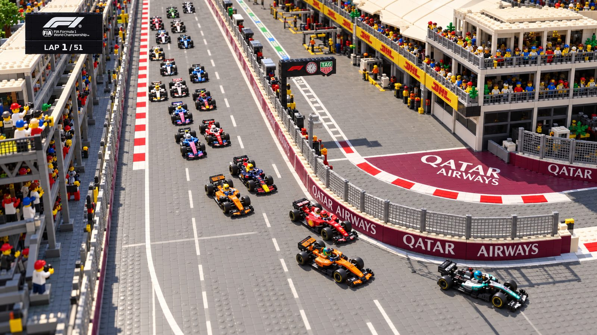
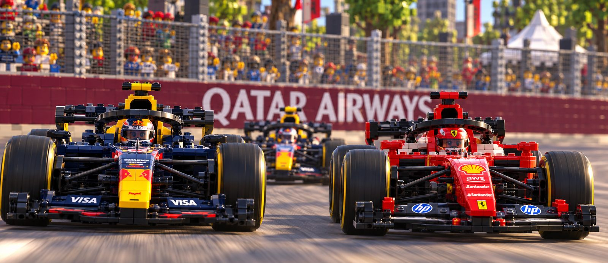
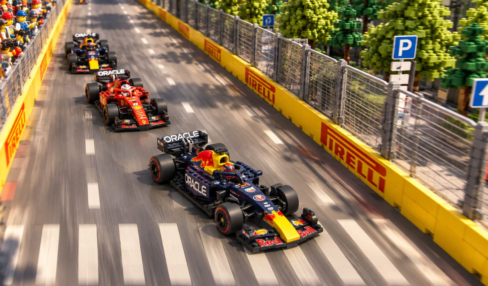
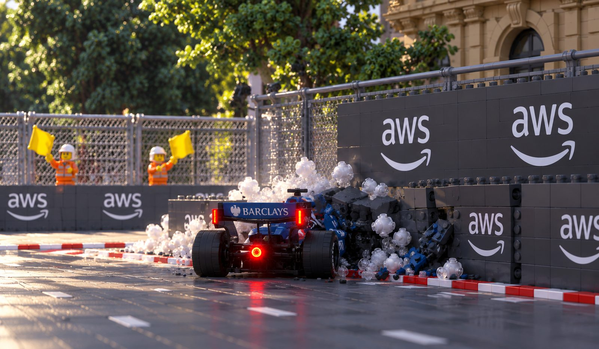
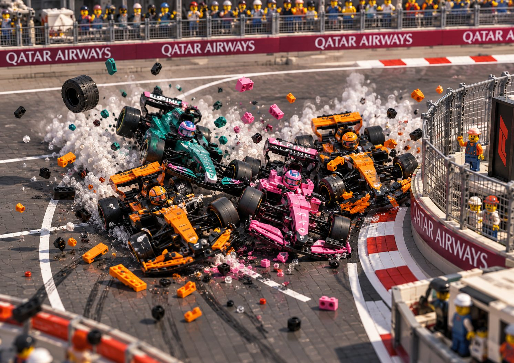
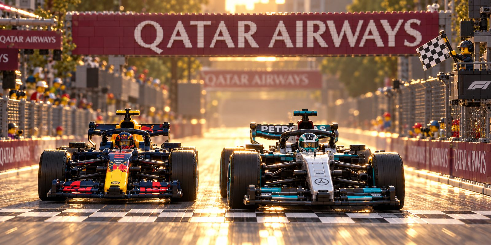
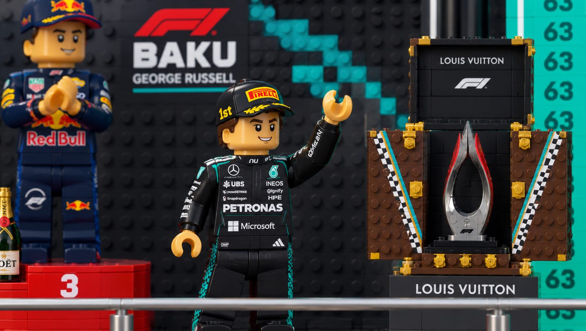
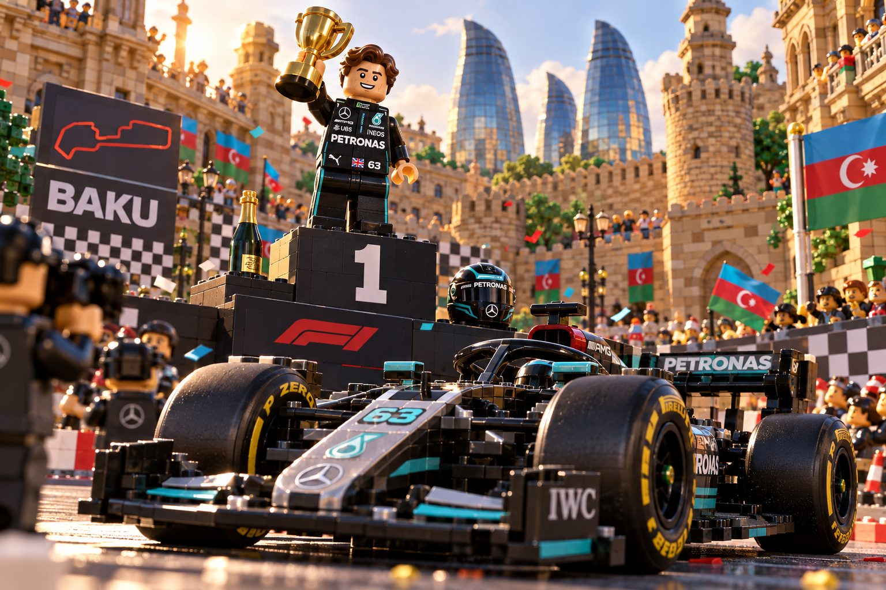

Azerbaijan Grand Prix · 26 September 2026
Two safety cars, a restart that destroyed four cars, and a drag race to the line that came down to 0.1 seconds.
The images on this page are brick-built renders, not photographs. They illustrate the race rather than document it.

Lights out in Baku, and the action started immediately on the long run down to Turn 1. Oscar Piastri made a brilliant launch from the grid, squeezing past Leclerc's Ferrari to snatch P2. Behind them, Lando Norris swept around Isack Hadjar on the grippier outside line, securing a double position gain for McLaren in the opening corners of the street circuit.

Red Bull showed frightening race pace through the middle of the Grand Prix. Isack Hadjar launched a daring attack on Charles Leclerc into Turn 1, running wheel to wheel with the Ferrari before locking down P3. With Max Verstappen on his tail, the team organised a swift swap rather than a fight, letting both cars hunt down the leaders without wasting a second.


Drama struck in the heavy braking zones. Lando Norris went wide with a costly lockup, and moments later Alex Albon lost the car and slammed into the TechPro barriers. With carbon fibre across the track and a car buried in the wall, there was no quick clean-up. The safety car came out at once, bunching the entire pack up for a restart nobody wanted.

The green flag produced total chaos. Pushed to the limit on cold tyres, Franco Colapinto misjudged his braking point into Turn 1, skidding into Pierre Gasly and collecting Lando Norris on the way through. Behind them, Lawson and Lindblad made contact at almost the same moment. Alpine's double points finish evaporated in a few seconds and a shower of shattered carbon fibre.
On the second restart the pressure proved relentless. Oscar Piastri tried to hold on to his podium position, but a heavy front tyre lockup into Turn 1 forced him wide. Hadjar took the invitation instantly, diving through to claim the last podium place while Piastri tumbled out of the points altogether.

The Grand Prix came down to a breathtaking finish. Max Verstappen locked on to George Russell's gearbox on the final lap and used the enormous Baku slipstream to mount a charge down the main straight. The two drag raced side by side towards the line, and Russell held on by the barest of margins, crossing 0.1 seconds ahead for a monumental win.


Every driver in that race got where they are by making decisions like the ones above, and hundreds more away from the track. Which team to sign for. When to take the blame. When to gamble a season on one move.
In Chasing P1 you start at sixteen and find out how far your own decisions take you. Free, no sign-up, plays in a browser.
Play Chasing P1 →